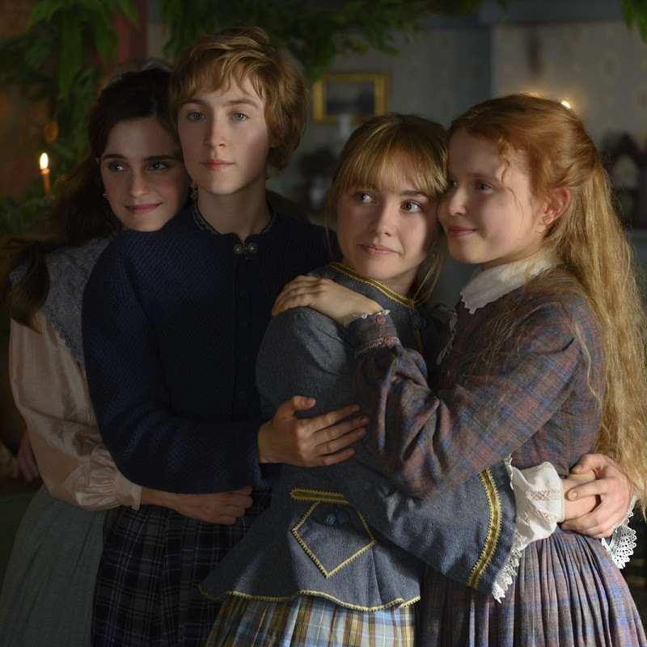
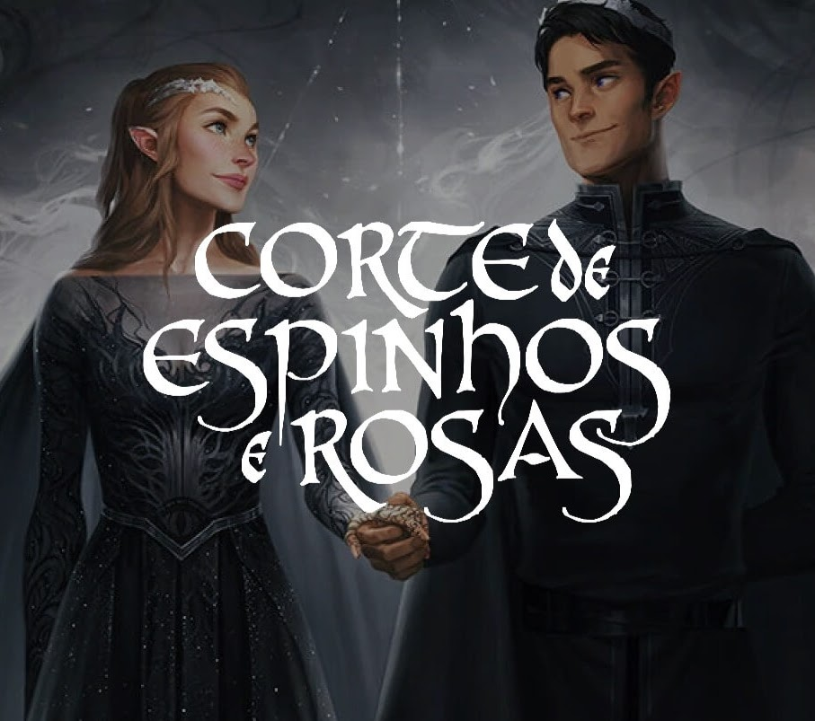

Mulherzinhas – Adoráveis Mulheres
Louisa May Alcott
O livro “Mulherzinhas – Adoráveis Mulheres” escrito por Louisa May Alcott é um verdadeiro clássico da literatura. Publicado originalmente em 1868, essa obra tem conquistado o coração de leitores de todas as idades ao longo dos anos. A história se passa durante a Guerra Civil Americana e acompanha a vida das quatro irmãs March: Meg, Jo, Beth e Amy. Cada uma delas possui uma personalidade única e enfrenta desafios e amadurecimento ao longo do enredo. Meg é a irmã mais velha, uma jovem adorável e responsável. Jo, a protagonista, é uma garota cheia de energia, amante da escrita e com um espírito independente. Beth é a irmã doce e tímida, enquanto Amy é a caçula, uma menina cheia de sonhos e ambições. O livro retrata a vida cotidiana das irmãs, seus sonhos, desafios e amores. Através das páginas, somos levados a uma jornada de amizade, amor, perdas e superação. O enredo aborda temas como feminilidade, igualdade de gênero, amor fraterno e a busca por independência. Com uma narrativa envolvente e personagens cativantes, “Mulherzinhas – Adoráveis Mulheres” é uma obra que nos ensina importantes lições sobre a vida e os relacionamentos humanos. Através das experiências das irmãs March, somos inspirados a perseguir nossos sonhos, valorizar a família e a amizade, e acreditar em nosso potencial. Se você busca uma leitura encantadora e emocionante, não deixe de conhecer “Mulherzinhas – Adoráveis Mulheres” e se deixar envolver pela magia desse clássico da literatura.

A Corte de Espinhos e Rosas
Sarah J. Maas
Depois de anos sendo escravizados pelas fadas, os humanos conseguiram se libertar e coexistem com os seres místicos. Cerca de cinco séculos após a guerra que definiu o futuro das espécies, Feyre, filha de um casal de mercadores, é forçada a se tornar uma caçadora para ajudar a família. Após matar um féerico transformada em lobo, uma criatura bestial surge exigindo uma reparação. Arrastada para uma terra mágica e traiçoeira que ela só conhecia através de lendas , a jovem descobre que seu captor não é um animal, mas Tamlin, senhor da Corte Feérica da Primavera. À medida que ela descobre mais sobre este mundo onde a magia impera, seus sentimentos por Tamlin passam da mais pura hostilidade até uma paixão avassaladora. Enquanto isso, uma sinistra e antiga sombra avança sobre o mundo das fadas e Feyre deve provar seu amor para detê-la… Ou Tamlin e seu povo estarão condenados. “Agradeça por seu coração humano, Feyre. Tenha piedade daqueles que não sentem nada.”” A série começa com em Corte de Espinhos e Rosas, onde temos Feyre vivendo em um mundo que fadas e humanos tem uma relação um tanto quanto complicada já que séculos os humanos foram escravizados pelas criaturas místicas. Nossa protagonista se vê crescendo cuidando das duas irmãs e de seu pai e tendo da caça a principal forma de sustendo, mas isso parece virar contra ela quando ao achar que se tratava de um lobo, acaba matando um feérico. Ao invés de prover comida para sua família, ela marcou seu destino para sempre cometendo um ato considerado fatal para o assassino e é claro que as fadas não iam deixar quieto e Tamlin, o senhor da corte Feérica Primaveril chega em sua casa clamando pela morte da culpada, uma vida por uma vida, mas quando seu pai implora pela vida de sua filha, Tamlin resolve aceitar um pagamento diferente: Feyre teria que ir com ele até a corte primaveril e viver ali para sempre. Pareceu familiar? Sim, o primeiro livro foi escrito pensando no famoso conto de fadas A Bela e a Fera e esse foi justamente um dos motivos de eu ter pegado esse livro pra ler. Se tem algo que amo, são releituras. ACOTAR foi uma bela surpresa… Eu estava de férias na época, sem ter nada pra fazer e louca pra encontrar algum livro que me tirasse o ar e quando descobri que era uma releitura sai correndo pra ler e o resultado? se tornou minha série favorita (Edward e Bella ainda amo vocês!). E nossa, não teve nada que eu não amasse nesse livro e a surpresa foi maior já que eu tinha lido TOG da Sarah e totalmente esperava algo parecido, mas não; onde em TOG era mais focado nas lutas, guerra e sofrimento dos personagens, ACOTAR era a brisa, suspiros, dor e muito romance. Os detalhes descritos por Sarah são como sempre incríveis. Após a grande guerra que libertou os humanos do poder das fadas, houve um tratado em que ficou decidido que humanos e Feéricos seriam divididos por uma muralha mágica entre as terras mortais e Prythian, terras feéricas. Prythian é dividida em várias cortes e no primeiro livro por mais que mencionadas algumas, temos mais vivencia na Primaveril que cada detalhe que lemos da pra imaginar perfeitamente como linda deve ser. Mas é claro que Maas tinha uma surpresa para os leitores… Quando você acha que será aquela bela e linda história de amor, ela te mostra que contos de fadas é de longe o que ela quer passar e uma Feyre que seria uma amiga maravilhosa de Aelin está longe de ser uma simples humana que apenas matou uma fada. Curiosidades: Sarah escreveu o primeiro livro de ACOTAR em 2009 e sem mesmo alguma editora o ter comprado e além disso, originalmente o livro foi escrito nas perspectivas de Rhysand e Feyre, mas ao ter os direitos vendidos, a coisa mudou um pouco e quem leu os próximos livros entende perfeitamente o motivo disso ter acontecido. Uma outra curiosidade, ACOTAR tem várias inspirações como o Folclore Norueguês, East of the Sun e West of the Moon and Tam Lin. Contém spoiler do primeiro livro da série. Se você não leu a Corte de Espinhos e Rosas e não quer spoilers, não continue a ler. O aguardado segundo volume da saga iniciada em Corte de espinhos e rosas, da mesma autora da série Trono de vidro Nessa continuação, a jovem humana que morreu nas garras de Amarantha, Feyre, assume seu lugar como Quebradora da Maldição e dona dos poderes de sete Grão-Feéricos. Seu coração, no entanto, permanece humano. Incapaz de esquecer o que sofreu para libertar o povo de Tamlin e o pacto firmado com Rhys, senhor da Corte Noturna. Mas, mesmo assim, ela se esforça para reconstruir o lar que criou na Corte Primaveril. Então por que é ao lado de Rhys que se sente mais plena? Peça-chave num jogo que desconhece, Feyre deve aprender rapidamente do que é capaz. Pois um antigo mal, muito pior que Amarantha, se agita no horizonte e ameaça o mundo de humanos e feéricos. “Para as estrelas que ouvem e os sonhos que são respondidos.” “Para as pessoas que olham para as estrelas e fazem um desejo.” No final de ACOTAR temos uma Feyre com o título de Quebradora de Maldições desde que ela libertou os Grã-Féericos de um encantamento de 50 anos e além disso, após quase morrer se tornou uma féerica carregando uma parte do poder dos 7 Grãos-Féericos. Em Corte de Névoa e Fúria temos Feyre tentando entender o que esse poder todo mudou nela e Tamlin tentando quebrar o laço feito por Rhysand, o Grã-Senhor da Corte Noturna, tem com sua amada. Feyre a partir de agora terá que ficar na Corte de Rhysand uma semana a cada mês e isso parece um pesadelo para nossa protagonista no começo, mas a cada ida se torna mais uma libertação do que uma obrigação já que desde que ela quase morreu, Tamlin ficou completamente super protetor. “Ajude-me, ajude-me, ajude-me. Implorei a alguém, qualquer um. Implorei a Lucien, parado na fileira da frente com o olho de metal fixo em mim. Implorei a Ianthe, com o rosto serene e paciente e adorável dentro daquele capuz. Salve-me, por favor, salve-me. Me tire daqui. Acabe com isso.” Com Feyre passando por muita dor da mudança, confusão de se tornar algo totalmente diferente de quem ela é e relembrando momentos que passou no último livro… Principalmente quem ela teve que matar para conseguir permanecer viva. Ela implora para que Tamlin ajude ela deixando que ela ajude mais, mas o medo de perdê-la fez com que ele não permitisse que ela saísse sozinha fazendo com que seus medos só aumentassem. Com o laço com Rhys, ela acaba fugindo disso e descobre que aquele feérico que ela julgou quando conheceu no primeiro livro. Além disso, conhecemos novos personagens e também novo cenário, a corte mais linda do mundo, A Corte Noturna. Cassian, Azriel, Mor e Amren salvaram minha vida e é isso. Eu não consigo lidar na forma que a Sarah consegue criar personagens tão amáveis. Esse livro foi total minha morte hahaha Eu li esse livro morrendo de medo porque eu terminei o livro total com medo de rolar um triangulo e de que as personalidades deles mudassem, mas me enganei muito feito e descobri que eu sabia de nada. ACOMAF mudou totalmente minha perspectiva e personagens que eu amava passei odiar e o contrário aconteceu também e MUITO FORTE. Rhysand foi um que eu odiava e no segundo se tornou meu personagem favorito de todos os livros que já li. Tamlin por outro lado só queria ele morto longe dos meus filhos. Curiosidade: O livro é inspirado na história de Hades e Perséfone. Contém spoiler do segundo livro da série. Se você não leu a Corte de Névoa e Fúria e não quer spoilers, não continue a ler. O terceiro volume da série best-seller Corte de Espinhos e Rosas, da mesma autora da saga Trono de Vidro em “Corte de Asas e Ruína” a guerra se aproxima, um conflito que promete devastar Prythian. Em meio à Corte Primaveril, num perigoso jogo de intrigas e mentiras, a Grã-Senhora da Corte Noturna esconde seu laço de parceria e sua verdadeira lealdade. Tamlin está fazendo acordos com o invasor, Jurian recuperou suas forças e as rainhas humanas prometem se alinhar aos desejos de Hybern em troca de imortalidade. Enquanto isso Feyre e seus amigos precisam aprender em quais Grãos-Senhores confiar, e procurar aliados nos mais improváveis lugares. Porém, a Quebradora da Maldição ainda tem uma ou duas cartas na manga antes que sua ilha queime. “Eu teria esperado quinhentos anos mais por você. Mil anos. E, se esse foi todo o tempo que nos foi permitido… a espera valeu a pena.” Começa com Feyre se vendo de novo na corte Primaveril onde jurou nunca mais voltar e pior ainda, se vendo ter que fazer um papel de alguém que quase a matou por dentro. E claro, longe da sua família. Com a promessa de se vingar da corte de Tamlin, a Grã-Senhora da Corte Noturna promete fazer a ação de dentro pra fora e ela não está brincando. Esse livro me fez ter tanto orgulho dos meus personagens… Temos Feyre de uma humana, vinda de um relacionamento abusivo se tornando uma mulher forte, guerreira e estrategista, sem mencionar que indo contra todas as tradições, virou a Grã-Senhora da Corte Noturna. ACOWAR me fez perceber várias coisas, como chegar a conclusão que Rhysand é real… Rhysand mostrou que a esperança é real e que SIM pode ter bondade em algo ruim, como ele mesmo disse. Rhysand é cada palavra de conforto para alguém que precisa. Ele é ações em pro ao outro, sem pensar em sí mesmo. Rhysand é o melhor personagem já escrito e nunca vou ser agradecida o bastante pela Sarah o ter criado. Eu queria sentir raiva pelo que a Sarah me fez passar lendo esse livro, mas não a sinto. Obrigada Sarah, um dia te digo obrigada pessoalmente. A grande alegria e honra de minha vida foi conhecê-los. Chamar vocês de minha família. E sou grato, mais do que posso expressar, por ter recebido esse tempo com vocês. Eu li personagens que eram fracos se tornarem fortes, personagens que eu amava se tornarem quem eu odeio e principalmente li amigos se tornando uma família e fazendo de tudo para cuidarem de quem amam. Já me perguntaram porque amo tanto essa série e esses personagens e é isso. Ler ACOTAR me faz acreditar que o amor pode tudo.
Curiosidades
- Adicione aqui curiosidades citadas pela Duda.
- Inclua anotações sobre lore, personagens ou universo.
Opinião da Duda
Aqui você pode colocar as impressões pessoais dela: pontos fortes, personagens favoritos, momentos marcantes e tudo que já está na resenha original.
